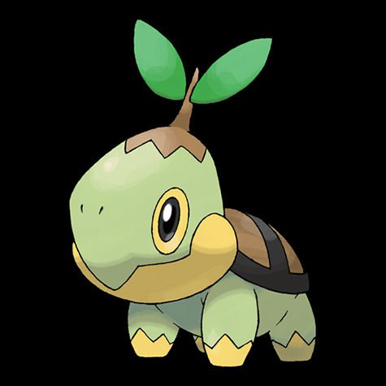
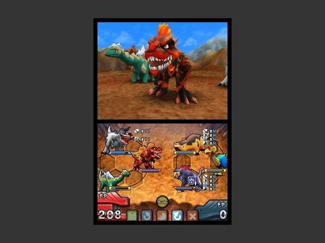
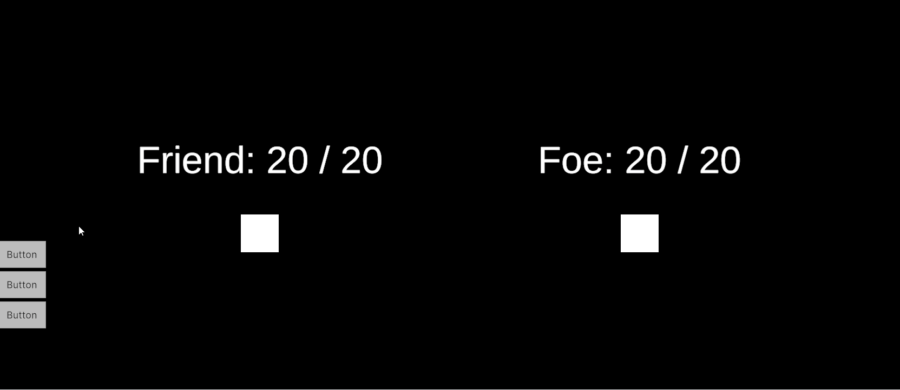

The parts of me that feel joy and wonder and whismsy are driven by novelty. This is something I am beginning to accept about myself. I'd really like to be able to set my sights on a single project and chisel away at it for months and years until it is done. In years past, I've tried marrying myself away - forcing myself to worship at the singular shrine of the Mono-Project. In the end, I always lose the passion and must elope with another project to rediscover my infatuation with creation.
So let me introduce you to a project.
Mayhaps you know about the existance of Pokemon. That is good. This knowledge will help you. Turtwig is my favorite.

Turtwig for scale.
A few months ago, I played a game called Brutal Orchistra. It's a turn-based strategy game. It's hard. It expects you to die a lot. This typically isn't my flavor of game, however the artistry hooked me. It's no great beauty of a game. Being a little bit ugly might even be the point. But it sure as hell punches above its weight. During its many battles, the game makes use of simple sprites but squishes, squashes, spins, and slams them to great effect. I understand the math used to achieve these effects and I'd like to try my hand at it.
While playing, a tumbler deep in my noggin was knocked loose and ancient bones were allowed to rise to the surface. I remembered Fossil Fighters.

Fossil Fighters is a video game I played in my pimpley adolescent years. I permitted myself a little bit of spontaneity and booted the game up through an emulator. I only dimly recalled the contours of the game's plot and titular 'Vivosaurs' so it was quite a joy playing through the opening hours. It has a novel take on the Pokemon formula and reminded me that there is still so much space to be explored in Creature-Collecting games.
This planted a seed in my mind. I want to try my hand at a game of this nature. It seems really, really fun. What kind of creatures? Well- there are lots of varieties of furniture. What about mimic-like furniture creatures that live in an enourmous furniture store? Don't they sound fun to become friends with? I sure think so.
It'll be awhile before the thematics of this vision are realized. I'm building a turn based battle system at the moment. I think I'll go into the technical details of this in a later post.

Friend attacks Foe. A tale as old as time.
Here is my personal project philosophy:
- Transcribing things from within my head onto the material plane brings me a great deal of joy. Sometimes the Whims drag me kicking and screaming from my digital sculpture into some new fixation. I must be kind to myself when this happens and accept that it is not a failure of willpower or dedication. When the Whims strike, I will make an effort to latch onto a sidelined project rather than a new one.
- The really cool thing about programming is that it lends itself very well to reuse. I have been using hobby projects as a way to build up a "personal toolbox" of code and systems. I have been finding this very gratifying. If I build a grid-based game (and if I'm smart about how I do it), I will then have a grid system that I can reuse for any future grid-related needs and save myself the time of programming one from scratch.
Toolbox goals for this project:
- A turn based battle system.
- A system for simple animations.
- A system to make communicating between logic and rendering easier.